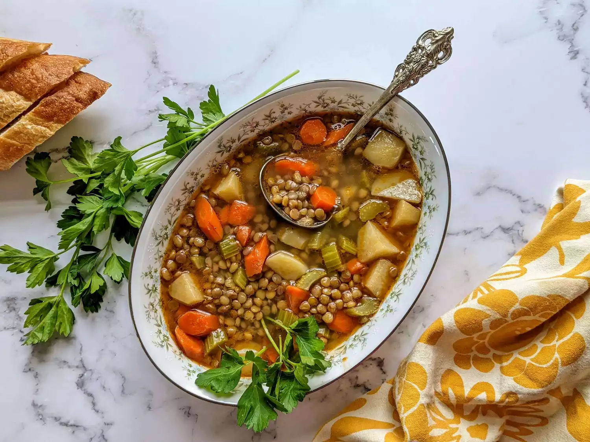

Lentil Soup

Description
You'll be amazed how much flavor you get just with vegetables, legumes, and herbs. This simple, clean eating lentil soup with brown lentils is vegan and tastes great.
Ingredients
- 1 3/4 cups brown lentils
- 2 tablespoons olive oil
- 2 onions, chopped
- 3 cloves garlic, minced
- 3 tablespoons tomato paste
- 1 bunch fresh parsley, chopped
- 1 stalk celery, chopped
- 1/2 carrot, chopped
- 1 teaspoon salt, or more to taste
- 2 bay leaves
- 8 cups water
- 1 tablespoon Dijon mustard
- 1 tablespoon red wine vinegar, or more to taste
- freshly ground black pepper to taste
Steps
- Place lentils in a bowl, cover with cold water, and pick out the broken ones that swim to the top. Drain.
- Heat olive oil in a large pot over medium heat and cook onion until soft and translucent, 5 to 7 minutes. Add garlic and cook until fragrant, about 30 seconds. Stir in tomato paste, parsley, carrot, celery, 1 teaspoon salt, and bay leaves. Cook and stir for 3 minutes.
- Pour lentils and 8 cups water into the pot. Bring to a boil, reduce heat, and cook partially covered until lentils are soft, 30 to 35 minutes. Stir in mustard and red wine vinegar. Puree soup with an immersion blender until mostly smooth but some chunks remain. Season with salt and pepper.